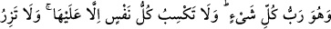

DOSDOĞRU DİN
161. De ki: Şüphesiz Rabbim beni doğru yola, dosdoğru dine, Allah’ı birleyen
İbrahim’in dinine iletti. O, ortak koşanlardan değildi.
162. De ki: Şüphesiz benim namazım, kurbanım, hayatım ve ölümüm hepsi
âlemlerin Rabbi Allah içindir.
163. O’nun ortağı yoktur. Bana sadece bu emrolundu ve ben müslümanların
ilkiyim.
164. De ki: Allah her şeyin Rabbi iken ben ondan başka Rab mı arayacağım?
Herkesin kazanacağı yalnız kendisine aittir. Hiçbir suçlu başkasının suçunu
yüklenmez. Sonunda dönüşünüz Rabbinizedir. Ve O, uyuşmazlığa düştüğünüz
gerçeği size haber verecektir.
Ey Muhammed! Tamamen uzak oldukları halde kendilerinin hak dine mensub
olduklarını iddia eden Mekkeli kafirlere “de ki: Rabb’im beni doğru yola iletti.” Yani
beni, vahiyle ve yaratılışın âfâkî ve enfüsî delillerini göstererek Hakk’a vasıl eden yola
irşâd etti. “Dosdoğru dine, Allah’ı birleyen (hanîf) İbrahim’in dinine” ulaştırdı.
“Din” diye ifade ettiğimiz “millet” kelimesi, “imlâ ettirmek, yazdırmak” mânâsından
gelir. Allah’ın kullarına şeriat olarak gönderdiği şeye, yani dine de “millet” denilmiştir.
Çünkü o şeriat, tedvin edilir, imlâ edilir, yazılır ve kendisini kabul eden mü’minler
arasında okunur, tedris edilir. Ona din denilmesinin sebebi ise insanların ilâhî kanunları
vaz’ eden ve kendilerine yol kılan Allah’a itâat etmelerindendir.
(Hanifen) “Allah’ı birleyen”, asla geri dönüşü olmamak üzere, bâtıl dinlerden yüz
çeviren, demektir.
“O (Allah’a) ortak koşanlardan değildi.” İbrahim (a.s.), ister usulde ister fürûda
hiçbir işlerinde asla müşriklerle beraber olmamış, onlara iştirak etmemiştir.
Âyette din, İbrahim (a.s.)’a izafe edilmiştir. Çünkü o günkü Arapların ve diğer